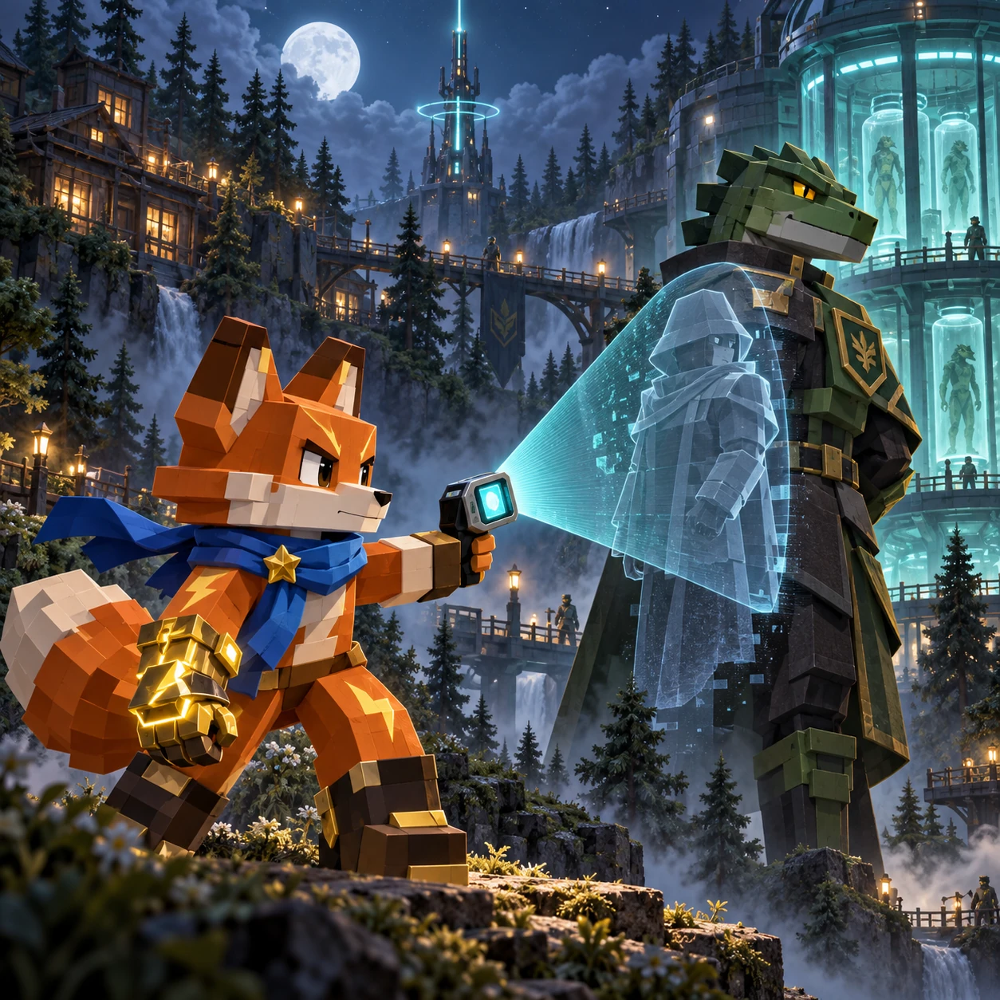

WEIGHTPLAY ORIGINAL
訊號帷幕

2042 · 第一次接觸
訊號帷幕
訪問目擊者、用神經視界揭露隱藏威脅，並在調查與戰鬥中找出訊號背後的真相。
MISSIONS 0 / 57
《訊號帷幕》完整調查指南
世界與調查目標
扮演狐狸調查員菲雅，追查串連城鎮、森林與隱密設施的可疑訊號。訪問目擊者、揭穿偽裝威脅並收集證據。依照當前任務行動；要求回報時，請返回奧拉身邊，不必繼續找敵人。調查推進後會開啟新路線。
操作方式與完整遊戲循環
- 在目前地區移動，先閱讀世界畫面上方的任務目標。
- 點擊靠近物件時出現的互動提示，或按 E 交談、開寶箱、啟動紀錄與使用傳送門。
- 面向敵人後使用「攻擊」揮出快速劍氣，或使用「技能」發射遠程訊號彈。
- 看到青色線索時切換真實視界，尋找偽裝人物、隱形敵人、寶藏或隱藏道路。
- 完成目前目標後繼續下一項任務；劇情要求時，把取得的證據帶回給奧拉。
桌面可用 WASD 或方向鍵移動，Space／J 攻擊、K 使用技能、V 切換視界、E 互動、Escape 開啟選單。手機使用左側搖桿與攻擊、技能、真視界三個按鈕，世界中所有可見的互動提示也都能直接點擊。普通敵人會巡邏與追擊；指揮官則會使用環形彈幕、直線衝鋒與短暫暈眩窗口。生命歸零只會讓菲雅回到安全檢查點，不會刪除永久進度。
成長、裝備與難度變化
先從對話與觀察入手，再結合探索、戰鬥和神經視界。擊敗敵人可獲得經驗並提升能力，找到的裝備能在選單穿戴或卸下。後續地區增加強敵、待解讀的紀錄與影響後續的選擇。章節結算後選擇繼續探索，就能接續調查，不會重新開始。
實用調查技巧
- 先把單一巡邏引離敵群。近戰劍氣出手較快，對重裝兵與神經術士則用遠程技能更安全。
- 真實視界不消耗能量。青色火花、可疑牆面、NPC 對話改變或看似空白的道路都值得切換確認。
- 取得裝備後記得查看能力。學習頭目招式時可偏重防禦，卸除裝備也不會失去所有權。
- 指揮官施放彈幕時持續移動，離開衝鋒直線，等牠短暫暈眩再集中攻擊。
開發設計說明
連續地圖讓線索與熟悉的人物、地點相連。神經視界不消耗能量，重點在觀察隱藏路線與威脅。觸控按鈕與鍵盤快捷鍵操作同一場冒險；任務要求時返回舊地點，也能利用存檔分次完成調查。
玩家、裝置與存檔資訊
遊戲可免費開始，不需要帳號。任務、經驗、等級、生命、裝備、寶箱、擊破目標、地圖檢查點與劇情選擇等重要變動會自動存入此瀏覽器；普通移動不會每幀寫入。可選購的五鑽石「訊號錨點」會永久增加最大生命，但絕非通關必要。清除網站資料或更換瀏覽器、裝置，可能使本機進度消失或分開保存。
常見問題
- 真實視界會消耗能量嗎？
- 不會。取得原型鏡片後即可自由切換，用來揭露隱形威脅、偽裝人物、隱藏路線、秘密入口與寶藏。
- 裝備可以卸除嗎？會不會消失？
- 已取得的裝備能在選單中查看能力、裝備或卸除。卸除只會暫時取消能力，不會把物品從存檔刪除。
- 菲雅被擊敗後會失去什麼？
- 菲雅會回到最近的安全檢查點，永久進度仍會保留。局部戰鬥生命與其他重要狀態也會在變動時自動保存。